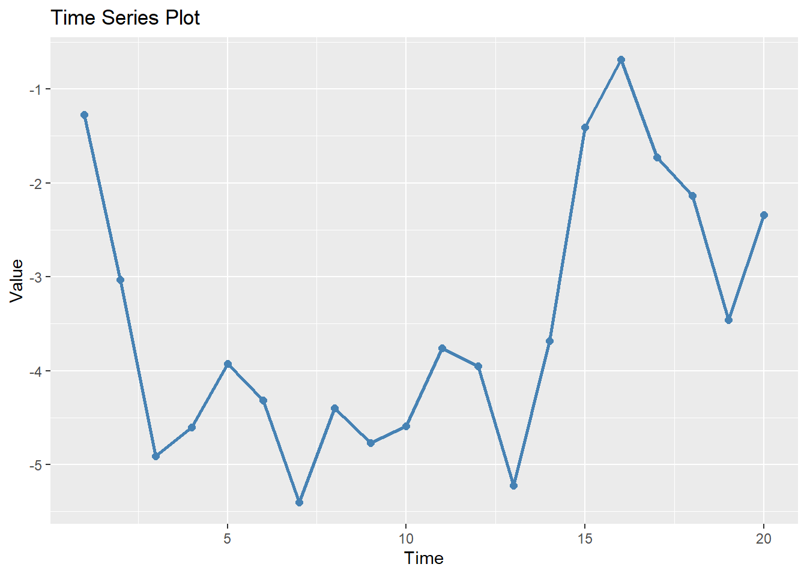

# Install if needed (uncomment to run)
# install.packages("ggplot2")
# Load the package
library(ggplot2)
# We'll use the built-in mtcars dataset
data(mtcars)Introduction to ggplot2 Graphics
visualization
tidyverse
Learn how to create beautiful visualizations using the ggplot2 package in R
The ggplot2 package, part of the tidyverse, implements the Grammar of Graphics to create elegant and complex plots with consistent syntax. It is one of the most popular visualization packages in R.
Getting Started with ggplot2
First, install and load the package:
The Grammar of Graphics
ggplot2 is based on the idea that any plot can be built from the same components:
- Data: The dataset you want to visualize
- Aesthetics: Mapping of variables to visual properties
- Geometries: Visual elements representing data points
- Facets: For creating small multiples
- Statistics: Statistical transformations of the data
- Coordinates: The coordinate system
- Themes: Controlling the visual style
Basic Plot Structure
Every ggplot2 plot starts with the ggplot() function and builds with layers:
# Basic scatter plot
ggplot(mtcars, aes(x = wt, y = mpg)) +
geom_point()
Common Geometries (geoms)
Scatter Plots
# Enhanced scatter plot
ggplot(mtcars, aes(x = wt, y = mpg, color = factor(cyl), size = hp)) +
geom_point(alpha = 0.7) +
labs(
title = "Car Weight vs. Fuel Efficiency",
subtitle = "Colored by cylinder count, sized by horsepower",
x = "Weight (1000 lbs)",
y = "Miles Per Gallon",
color = "Cylinders",
size = "Horsepower"
)
Line Plots
# Create sample time series data
time_data <- data.frame(
time = 1:20,
value = cumsum(rnorm(20))
)
# Line plot
ggplot(time_data, aes(x = time, y = value)) +
geom_line(color = "steelblue", size = 1) +
geom_point(color = "steelblue", size = 2) +
labs(title = "Time Series Plot", x = "Time", y = "Value")
Bar Charts
# Count of cars by cylinder
ggplot(mtcars, aes(x = factor(cyl))) +
geom_bar(fill = "steelblue") +
labs(title = "Count of Cars by Cylinder", x = "Cylinders", y = "Count")
# Bar chart with values
cyl_summary <- as.data.frame(table(mtcars$cyl))
names(cyl_summary) <- c("cyl", "count")
ggplot(cyl_summary, aes(x = cyl, y = count)) +
geom_col(fill = "steelblue") +
geom_text(aes(label = count), vjust = -0.5) +
labs(title = "Count of Cars by Cylinder", x = "Cylinders", y = "Count")
Histograms and Density Plots
# Histogram
ggplot(mtcars, aes(x = mpg)) +
geom_histogram(bins = 10, fill = "steelblue", color = "white") +
labs(title = "Distribution of Fuel Efficiency", x = "Miles Per Gallon", y = "Count")
# Density plot
ggplot(mtcars, aes(x = mpg)) +
geom_density(fill = "steelblue", alpha = 0.5) +
labs(title = "Density of Fuel Efficiency", x = "Miles Per Gallon", y = "Density")
# Combined histogram and density
ggplot(mtcars, aes(x = mpg)) +
geom_histogram(aes(y = ..density..), bins = 10, fill = "lightblue", color = "white") +
geom_density(color = "darkblue", size = 1) +
labs(title = "Distribution of Fuel Efficiency", x = "Miles Per Gallon", y = "Density")
Box Plots
# Box plot
ggplot(mtcars, aes(x = factor(cyl), y = mpg)) +
geom_boxplot(fill = "lightblue") +
labs(title = "Fuel Efficiency by Cylinder Count", x = "Cylinders", y = "Miles Per Gallon")
# Box plot with points
ggplot(mtcars, aes(x = factor(cyl), y = mpg)) +
geom_boxplot(fill = "lightblue", outlier.shape = NA) +
geom_jitter(width = 0.2, alpha = 0.5) +
labs(title = "Fuel Efficiency by Cylinder Count", x = "Cylinders", y = "Miles Per Gallon")Customizing Aesthetics
You can map variables to various aesthetic properties:
# Multiple aesthetics
ggplot(mtcars, aes(x = wt, y = mpg, color = factor(cyl), shape = factor(am), size = hp)) +
geom_point(alpha = 0.7) +
labs(
title = "Car Weight vs. Fuel Efficiency",
x = "Weight (1000 lbs)",
y = "Miles Per Gallon",
color = "Cylinders",
shape = "Transmission",
size = "Horsepower"
) +
scale_shape_discrete(labels = c("Automatic", "Manual"))
Faceting (Small Multiples)
Faceting creates separate plots for subsets of data:
# Facet by transmission type
ggplot(mtcars, aes(x = wt, y = mpg, color = factor(cyl))) +
geom_point() +
facet_wrap(~am, labeller = labeller(am = c("0" = "Automatic", "1" = "Manual"))) +
labs(title = "Weight vs. MPG by Transmission Type", x = "Weight", y = "MPG", color = "Cylinders")
# Facet grid with two variables
ggplot(mtcars, aes(x = wt, y = mpg)) +
geom_point() +
facet_grid(vs ~ gear, labeller = labeller(
vs = c("0" = "V-Engine", "1" = "Straight Engine"),
gear = c("3" = "3 Gears", "4" = "4 Gears", "5" = "5 Gears")
)) +
labs(title = "Weight vs. MPG by Engine Type and Gear Count")
Adding Statistics
ggplot2 can add statistical summaries to plots:
# Scatter plot with linear regression line
ggplot(mtcars, aes(x = wt, y = mpg)) +
geom_point() +
geom_smooth(method = "lm", se = TRUE) +
labs(title = "Weight vs. MPG with Linear Trend", x = "Weight", y = "MPG")
# Scatter plot with different smoothing methods by cylinder
ggplot(mtcars, aes(x = wt, y = mpg, color = factor(cyl))) +
geom_point() +
geom_smooth(se = FALSE) +
labs(title = "Weight vs. MPG by Cylinder", x = "Weight", y = "MPG", color = "Cylinders")
Coordinate Systems
Change how the data is mapped to the plotting area:
# Flip coordinates
ggplot(mtcars, aes(x = factor(cyl), y = mpg)) +
geom_boxplot(fill = "lightblue") +
coord_flip() +
labs(title = "Fuel Efficiency by Cylinder Count", x = "Cylinders", y = "Miles Per Gallon")
# Polar coordinates for a pie chart
ggplot(cyl_summary, aes(x = "", y = count, fill = cyl)) +
geom_bar(stat = "identity", width = 1) +
coord_polar("y", start = 0) +
labs(title = "Cars by Cylinder Count", fill = "Cylinders") +
theme_void()
Themes
Themes control the non-data elements of the plot:
# Default theme
p <- ggplot(mtcars, aes(x = wt, y = mpg, color = factor(cyl))) +
geom_point() +
labs(title = "Weight vs. MPG by Cylinder Count", x = "Weight", y = "MPG", color = "Cylinders")
# Different built-in themes
p + theme_minimal()
p + theme_classic()
p + theme_dark()
p + theme_bw()
Custom Theme Elements
You can customize specific theme elements:
ggplot(mtcars, aes(x = wt, y = mpg, color = factor(cyl))) +
geom_point(size = 3) +
labs(
title = "Custom Themed Plot",
subtitle = "Weight vs. MPG by Cylinder Count",
x = "Weight (1000 lbs)",
y = "Miles Per Gallon",
color = "Cylinders"
) +
theme(
plot.title = element_text(size = 16, face = "bold"),
plot.subtitle = element_text(size = 12, color = "gray50"),
axis.title = element_text(size = 12, face = "bold"),
legend.position = "top",
legend.background = element_rect(fill = "lightyellow", color = "gray"),
panel.background = element_rect(fill = "white"),
panel.grid.major = element_line(color = "gray90"),
panel.grid.minor = element_line(color = "gray95")
)
Combining Multiple Plots
The patchwork package makes it easy to combine multiple ggplots:
# Create three different plots
if (requireNamespace("patchwork", quietly = TRUE)) {
library(patchwork)
p1 <- ggplot(mtcars, aes(x = wt, y = mpg)) +
geom_point() +
labs(title = "Weight vs. MPG")
p2 <- ggplot(mtcars, aes(x = hp, y = mpg)) +
geom_point(color = "red") +
labs(title = "Horsepower vs. MPG")
p3 <- ggplot(mtcars, aes(x = factor(cyl))) +
geom_bar(fill = "steelblue") +
labs(title = "Count by Cylinders")
# Combine plots
p1 + p2 + p3 + plot_layout(ncol = 2)
} else {
message("The patchwork package is not installed. Install with: install.packages('patchwork')")
}
Saving ggplot2 Plots
# Create a plot to save
p <- ggplot(mtcars, aes(x = wt, y = mpg, color = factor(cyl))) +
geom_point(size = 3) +
labs(title = "Weight vs. MPG", x = "Weight", y = "MPG", color = "Cylinders") +
theme_minimal()
# Example of how to save (not run)
# ggsave("my_ggplot.png", plot = p, width = 8, height = 6, dpi = 300)
# ggsave("my_ggplot.pdf", plot = p, width = 8, height = 6)ggplot2 offers a powerful and flexible system for creating visualizations in R. Its consistent syntax and layered approach make it possible to create both simple and complex plots with the same basic structure.